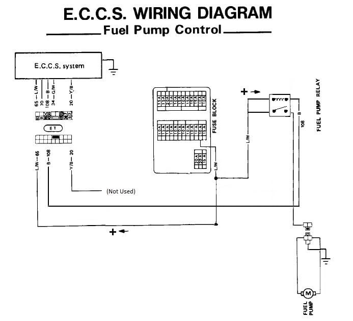
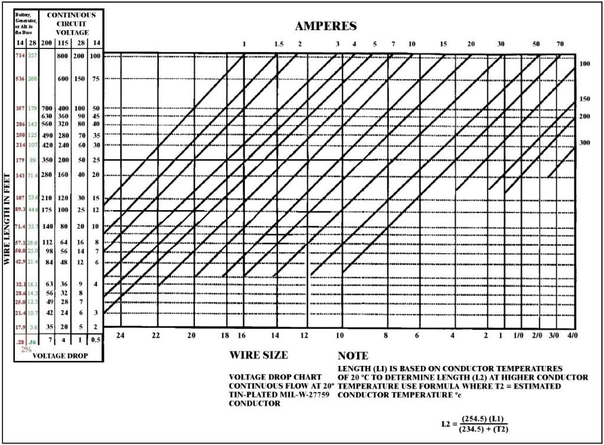
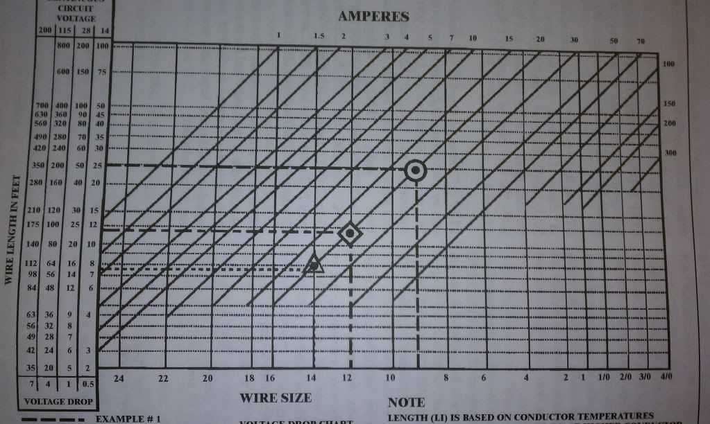

-
The ECU alters the ground side resistance to attenuate voltage. With any full voltage mod that uses pin 108 the ECU will still try to vary the resistance, but it will be lowering the voltage of a coil on a relay, not the fuel pump. A relay coil seeing 13.5V or one seeing the lowest of ~9.4V or anything in between is exactly the same - the relay will click, so you get full power through the switch side of the relay, even while the ECU tries to vary the voltage/pump speed. Again back to stock wiring to see if I can settle this for you (and the other parallel thread), the fuel pump always is connected hot side and runs when it gets a reference to ground, yes?. At the fuel pump connector there are three wires/connections: hot, ground, and shield for the ground. That ground wire on the wiring diagram is 108, but goes to pin 108 AND a switched ground on the fuel pump relay switched by pin 20 (you posted up a diagram that shows this). So when you do the mod as originally described here, cutting the wire at the fuel pump connector in the hatch area, you're using that pin 108 wire as the ground reference to switch a relay that the fuel pump is now wired to. BUT that ground reference on that wire can ALSO come via the stock fuel pump relay switched on pin 20. So the diagram from MichaelP that you cleaned up is not showing any of that, but I'm guessing it's there.
The mod usually adds a relay to a circuit that already has a relay it rarely uses. I've suggested the same thing without an extra relay. Either the relay is wired to two paths to ground, or the fuel pump is, shouldn't matter either way. -
None of this really matters, using the fuel pump ground (which leads to Pin 108) or the relay on/off ground (which leads to Pin 20) will still switch the relay/on off to provide full voltage to the pump. Easiest way is to just use the power/ground going to the pump in the hatch to control the relay, then run a new full voltage power through the relay switched side with a new ground. Gives the pump battery voltage whenever the key is on for less than 5 seconds, or the engine is running…exactly as OE operates it, only full voltage at all times. No reason to complicate crap.
Plus doing it how I said takes away the risk of melting stock wiring with better pumps like many people including myself have had happen.- VG30DET (HE341) 86 300ZX - 1982 280ZX Turbo - Headered NA 1986 300ZX 2+2 - 2000 Xterra - -
[quote]JeffSly wrote:Mine never exceeded 10A. I still run a 10A fuse to this day with my new wiring, I never blew a fuse. I simply overheated the shitty stock wiring.Originally posted by michaelp
Easiest way is to put a relay in the rear of the car. Run OE fuel pump + to Relay PIN 85, and OE fuel pump - to Relay PIN 86. Run new power wire from battery (fused up near the battery) to the relay PIN 30, and then relay PIN 87 to the fuel pump +. Run the fuel pump - to a bolt on the body. It'll be full voltage for the first 5 seconds of key on, and whenever the engine is running, just like the OE ECU controls it other than being full voltage 100% of the time.- VG30DET (HE341) 86 300ZX - 1982 280ZX Turbo - Headered NA 1986 300ZX 2+2 - 2000 Xterra - -
Well that's that then. Shouldn't be that, but I won't be stubborn about it and expect anything past stock from the stock wiring. 8) Thanks for clearing that up.michaelp wrote: Mine never exceeded 10A. I still run a 10A fuse to this day with my new wiring, I never blew a fuse. I simply overheated the shitty stock wiring.
I still don't consider NOT adding a new relay, sometimes switched by an existing relay to be complicating crap especially on an engine/ECU swap. For JWS it matters, those two grounds that you talk about using interchangeably (108/20) are switched by the ECU to turn on the pump. I can only guess you need both. It'd be interesting for you or someone with it rewired like you described to pull the stock fuel pump relay and see if it does anything noticeable. -
Oh I see why we differ now. You're assuming I'm using stock wiring which I am not. I'm using the 300zx EFI harness only and associated components where applicable. This is going into my 260z. I needed a place to understand how to hook up the Fuel pump and stublmed across this site. I'm only using pin 108 to control my own wiring harness for the fuel pump I have.JeffSly wrote: The ECU alters the ground side resistance to attenuate voltage. With any full voltage mod that uses pin 108 the ECU will still try to vary the resistance, but it will be lowering the voltage of a coil on a relay, not the fuel pump. A relay coil seeing 13.5V or one seeing the lowest of ~9.4V or anything in between is exactly the same - the relay will click, so you get full power through the switch side of the relay, even while the ECU tries to vary the voltage/pump speed. Again back to stock wiring to see if I can settle this for you (and the other parallel thread), the fuel pump always is connected hot side and runs when it gets a reference to ground, yes?. At the fuel pump connector there are three wires/connections: hot, ground, and shield for the ground. That ground wire on the wiring diagram is 108, but goes to pin 108 AND a switched ground on the fuel pump relay switched by pin 20 (you posted up a diagram that shows this). So when you do the mod as originally described here, cutting the wire at the fuel pump connector in the hatch area, you're using that pin 108 wire as the ground reference to switch a relay that the fuel pump is now wired to. BUT that ground reference on that wire can ALSO come via the stock fuel pump relay switched on pin 20. So the diagram from MichaelP that you cleaned up is not showing any of that, but I'm guessing it's there.
The mod usually adds a relay to a circuit that already has a relay it rarely uses. I've suggested the same thing without an extra relay. Either the relay is wired to two paths to ground, or the fuel pump is, shouldn't matter either way.
I'm going to use the EFI harness wired in like so to my own realy and fuel pump.
 -
That is entirely NOT where we differ my friend. It's where you and everyone else differs. I've assumed you're not using the 300zx body harness the whole time, which is why I'm going back over this yet again. Everything ELSE described here is telling how to modify the stock body harness.JSM wrote: Oh I see why we differ now. You're assuming I'm using stock wiring which I am not. I'm using the 300zx EFI harness only and associated components where applicable. This is going into my 260z. I needed a place to understand how to hook up the Fuel pump and stublmed across this site. I'm only using pin 108 to control my own wiring harness for the fuel pump I have.
I'm going to use the EFI harness wired in like so to my own realy and fuel pump.
Everyone else (probably) that has done this mod STILL HAS pin 20 connected to the stock relay connected to their fuel pump. It can and does still turn their pump on under the conditions for why it existed in the first place. If you don't connect pin 20 it is pretty much equivalent to removing the fuel pump relay on a stock 300zx and assuming there was no reason for it to ever be there/the conditional logic on pin 20 and 108 are totally redundant and that the ECU could run the pump properly all the time without it. And honestly, it might, it wouldn't be the only Nissan control that is less than needed, I'm just saying you might be the pioneer of deleting it. -
Can EVERYONE else that has done this mode chime in and let us know if you left pin 20 connected?
The way I read this post and viewed MichaelP original drawing he did not use pin 20:
viewtopic.php?f=6&t=28700
Per this swap on Hybridz he did not use pin 20 either:
http://forums.hybridz.org/index.php?showtopic=49087
Now the ECU controls the â power that switches the FPR on thru the ECU pin 108, and the 16 l/r wire is ignition + to the FPR. Now I have no explanation for this part, but according to the book, pin 20 from the Z31 ecu should activate the FPR, which then loops back thru the FPR to pin 108. This did not work for me. However, it worked perfect when I connected the new wire going to pin 108. Again I donât know why pin 108 is working for this and pin 20 did not, but it sure is working well on my car.
Also I disconnected the knock sensor and did not switch any of the injector wire.
It's difficult to argue with the results, however, I understand your point. -
No it's not, and no you don't. One last time: the stock 300zx uses pin 108 to run the pump direct from the ECU AND pin 20 to run the pump off the relay at different times/different conditions. When it's using 108 it is NOT using the relay. I never said 108 alone wouldn't "work", just may not work 100% as Nissan drew it up.JSM wrote: It's difficult to argue with the results, however, I understand your point. -
[quote]JeffSly wrote:Originally posted by JSMI âm content on disagreeing with you on this, yes the results speak for themselves. It works off of pin 108. And again, yes I get it about the pin differences; I'm not sure why youâre so stuck on trying to beat this in my head. I'm NOT USING THE STOCK RELAY!Originally posted by JSM
I care about the performance of how I can use a newer system in an older car. NISSAN never had any intention of me doing this so I could care less if it is how NISSAN designed it, just as long as I can get the benefit of the 300zx ECU and leave a bit of the safety feature from the ECU in place. If it's only 75% and works correctly, I don't care. If all else fails, I'm going to circumvent the ECU controlling the fuel pump altogether.
The entire point of this thread and site is for performance. Performance to me means push it past the stock NISSAN design to get the best results possible, while keeping as many safety and operational functions in place where possible. I'm doing this alone by simply using the newer design, regardless if I get every part working EXACTLY as NISSAN designed it.
I appreciate your time and effort in explaining the full functionality of how this was intended to work. -
Kay thanks for your appreciation 8) . In all seriousness, my concern was that with pin 108 only the pump may not come on for the initial 5 seconds or when starting with engine temp above 100 Celcius and such, because the ECU has 2 means to turn the pump on, and you're only going to use 1 of them. Was thinking 20 could be used exclusively under the conditions listed in the FSM and then your car wouldn't start or something.JSM wrote: I appreciate your time and effort in explaining the full functionality of how this was intended to work.
I agree with your wiring diagram completely and apologize for complicating things. Thanks for helping me understand (I think) why that semi-redundant relay is in my car. -
[quote]JeffSly wrote:Understand completely. Will find out, hopefully not the hard way! :-DOriginally posted by JSM -
Nah, I now think you'll be all set and that a lot of 300zx owners could free up a blue relay and shed an ounce or two if they wanted. :nanan?re -
useful charts for wire gauge determination for thoes running real fuel pumps

 -
My fuel pump runs constantly while the ignition is on, could it be possible that I have a problem in the ECU? -
Have we gained any clarity from this 5 page post? Does anyone have the diagram from the OP?
My '87 NA2T conversion running 12 psi. boost, has slowly been running worse and worse. I do hit
boost regularly. Shorted/ open fuel pump circiut is the only code popping up on the ECU. Thanks.Everything is Meaningless.

Copyright © 2006–. All rights reserved. Privacy Policy